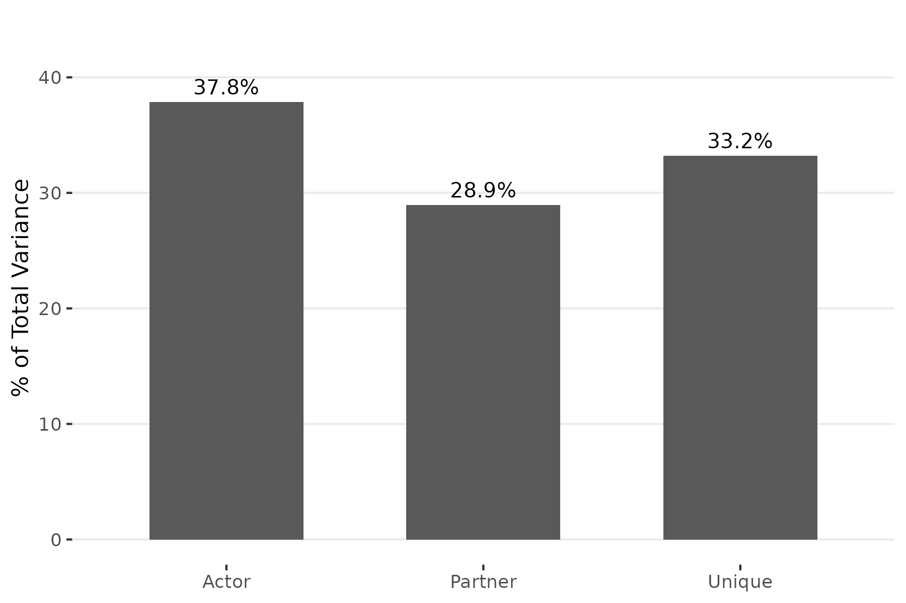
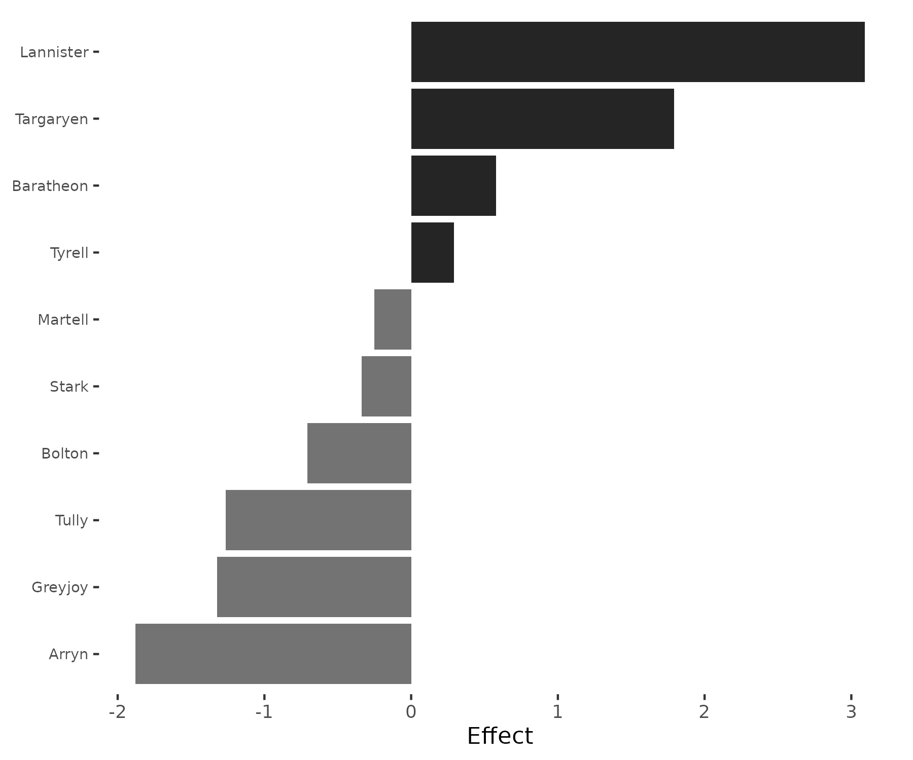
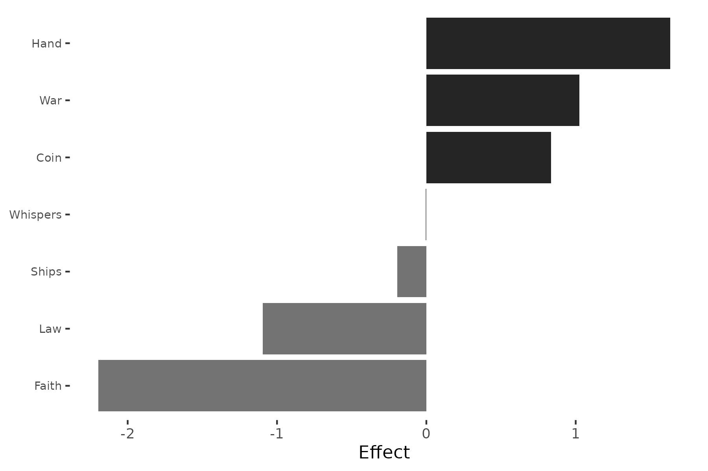
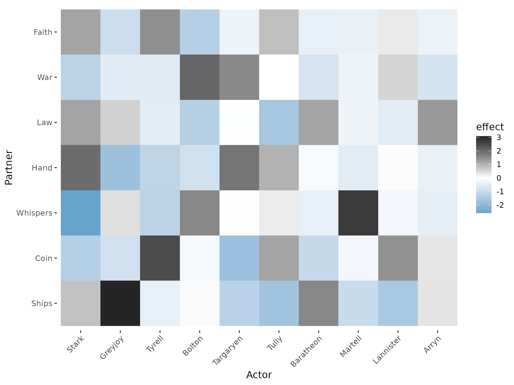
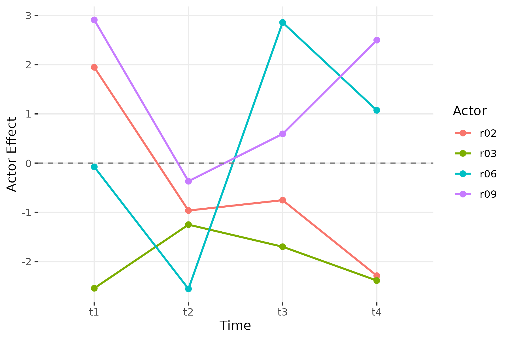

Bipartite Networks: Two-Mode SRM Analysis
Cassy Dorff, Shahryar Minhas, and Tosin Salau
2026-03-29
Source:vignettes/bipartite.Rmd
bipartite.RmdOverview
The preceding vignettes focus on unipartite (one-mode) networks where every actor can both send and receive ties. Many networks, however, are bipartite (two-mode): senders and receivers come from different populations. Countries send aid to organizations. Students enroll in courses. Voters support candidates. In these settings, the SRM decomposes variation into sender effects, receiver effects, and dyad-specific residuals — but the covariance components (reciprocity, actor-partner covariance) are not defined because no actor appears on both sides.
This vignette walks through the bipartite SRM workflow using a Game of Thrones-inspired dataset, then demonstrates simulation-based validation and longitudinal two-mode analysis.
The Small Council dataset
The small_council dataset is a 10 x 7 matrix of
simulated “pursuit intensity” scores. Each row is a Great House from
Westeros; each column is a Small Council position. The value in cell
represents how aggressively House
pursues position
,
on a 0–10 scale.
library(srm)
data(small_council)
small_council
Hand Coin Whispers Ships War Law Faith
Stark 8.7 4.6 2.5 5.7 4.9 5.2 4.1
Lannister 10.2 10.8 8.3 6.8 10.1 6.9 6.6
Targaryen 10.7 6.3 7.2 5.8 9.8 6.1 4.7
Baratheon 7.5 5.8 5.6 7.4 6.3 6.1 3.4
Tyrell 6.2 9.0 4.5 5.1 6.2 4.1 5.0
Martell 6.3 5.8 7.9 4.0 5.9 3.8 2.6
Greyjoy 4.0 4.1 4.5 7.0 4.6 3.6 1.0
Arryn 4.8 4.7 3.1 3.7 3.8 3.8 1.0
Tully 6.8 6.2 4.4 2.3 5.2 1.5 2.8
Bolton 5.5 5.4 6.3 4.6 7.8 2.3 1.2The rows (Houses) and columns (positions) are distinct populations — a House cannot be a position and vice versa. This makes the network bipartite.
Fitting the bipartite SRM
Pass the rectangular matrix directly to srm(). The
function detects the non-square shape and applies the bipartite
decomposition automatically.
fit = srm(small_council)
fit
Social Relations Model
----------------------------------------
Mode: bipartite
Actors: 10
Grand mean: 5.4357
Variance Decomposition:
Actor 2.0486 ( 37.8%)
Partner 1.5662 ( 28.9%)
Unique 1.7980 ( 33.2%)Three variance components are reported. Actor variance (37.8%) captures differences in overall ambition across Houses — some Houses pursue all positions aggressively while others are largely passive. Partner variance (28.9%) captures how desirable each position is on average — the Hand of the King is more sought after than the Master of Laws. Unique variance (33.2%) captures house-position affinities that cannot be explained by either side’s general tendency.
No covariance components appear because reciprocity and actor-partner covariance are not defined when senders and receivers belong to different populations.
plot(fit, type = "variance")
The roughly even three-way split means that network structure is driven by a combination of which Houses are most ambitious, which positions are most attractive, and which specific House-position pairings deviate from those general patterns.
Actor effects: which Houses are most ambitious?
plot(fit, type = "actor")
Lannister has the highest actor effect (+3.09), meaning it pursues Small Council positions far more aggressively than the average House. Targaryen (+1.79) is close behind — both are Houses with imperial ambitions. At the other end, Arryn (-1.88) and Greyjoy (-1.32) show the weakest overall pursuit. Arryn’s isolationism in the Vale and the Greyjoys’ focus on the sea over court politics are consistent with low engagement across positions.
Partner effects: which positions are most coveted?
plot(fit, type = "partner")
The Hand of the King has the strongest partner effect (+1.63), reflecting that nearly every House wants this role. Master of War (+1.02) and Master of Coin (+0.83) are also widely pursued. At the bottom, the High Septon / Faith representative (-2.20) and Master of Laws (-1.10) attract the least interest.
Unique effects: house-position affinities
The unique effects reveal which House-position pairings are stronger or weaker than the general tendencies would predict.
plot(fit, type = "dyadic")
The heatmap highlights several distinctive affinities. The darkest cell is Greyjoy pursuing Ships (+3.08) — the Ironborn’s obsession with naval power is the strongest unique effect in the network. Martell pursues Whispers (+2.72), reflecting the Dornish reputation for intrigue. Tyrell pursues Coin (+2.44), consistent with their wealth and agricultural power. Stark has a strong affinity for the Hand (+1.97) but uniquely avoids Whispers (-2.59) — Ned Stark’s rigid honor made espionage anathema.
We can extract the exact values:
u = fit$unique_effects[[1]]
# strongest positive affinities
top_pairs = sort(u[u != 0], decreasing = TRUE)[1:6]
round(top_pairs, 2)
[1] 3.08 2.72 2.44 2.05 1.97 1.84# strongest negative affinities
bottom_pairs = sort(u[u != 0])[1:6]
round(bottom_pairs, 2)
[1] -2.59 -1.76 -1.75 -1.68 -1.58 -1.53Stark avoiding Whispers (-2.59) is the strongest negative unique effect — a House-position mismatch driven by values rather than capability.
Bipartite decomposition: what changes
In the unipartite SRM, actor and partner effects use bias-corrected formulas because the same individuals appear in both row and column margins. In the bipartite case, rows and columns are distinct populations, so effects are simple deviations from the grand mean:
Variance components are still bias-corrected using two-way ANOVA degrees of freedom:
The bias correction subtracts the expected contribution of dyadic noise to the marginal variances. Without it, actor and partner variances would be inflated.
Simulation validation
To verify the decomposition, we generate a bipartite network with known parameters and check recovery:
sim = sim_srm(
n_actors = c(15, 20),
bipartite = TRUE,
actor_var = 2.0,
partner_var = 1.0,
unique_var = 1.5,
grand_mean = 3.0,
seed = 6886
)
fit_sim = srm(sim$Y)
summary(fit_sim)
Social Relations Model - Variance Decomposition
==================================================
Component Variance % Total
------------------------------------------
Actor 1.6468 39.2%
Partner 1.1406 27.2%
Unique 1.4111 33.6%data.frame(
Component = c("Actor var", "Partner var", "Unique var"),
True = c(2.0, 1.0, 1.5),
Estimated = round(fit_sim$stats$variance, 2)
)
Component True Estimated
1 Actor var 2.0 1.65
2 Partner var 1.0 1.14
3 Unique var 1.5 1.41The estimates are in the right ballpark for a single draw from a 15 x 20 matrix. All three components are close to their true values, with the sampling variability typical of moderate-sized bipartite networks. The relative ordering is preserved: actor variance is largest, unique variance is intermediate, and partner variance is smallest.
Longitudinal bipartite analysis
Bipartite networks observed over time are handled the same way as
unipartite longitudinal data. Pass a named list of rectangular matrices
to srm():
sim_long = sim_srm(
n_actors = c(10, 12),
n_time = 4,
bipartite = TRUE,
actor_var = 2.0,
partner_var = 1.5,
unique_var = 1.0,
seed = 6886
)
fit_long = srm(sim_long$Y)
fit_long
Social Relations Model
----------------------------------------
Mode: bipartite
Time points: 4
Actors: 10
Grand mean: -0.7244 (avg)
Variance Decomposition:
Actor 2.4594 ( 49.5%)
Partner 1.4485 ( 29.2%)
Unique 1.0604 ( 21.3%)All longitudinal tools work with bipartite fits. We can track how sender effects evolve:
srm_trend_plot(fit_long, type = "actor", n = 4)
And assess whether sender positions are stable across periods:
srm_stability(fit_long, type = "actor")
time1 time2 correlation n
1 t1 t2 0.05052448 10
2 t2 t3 -0.15593598 10
3 t3 t4 0.64377932 10The correlations between consecutive periods reflect whether the same senders maintain their relative positions over time. Because the simulated data generates independent effects at each period, correlations are modest.
We can do the same for receiver (partner) effects:
Key differences from unipartite SRM
| Feature | Unipartite | Bipartite |
|---|---|---|
| Matrix shape | Square () | Rectangular () |
| Diagonal | Set to zero | No diagonal |
| Effect formulas | Bias-corrected (finite-sample) | Simple deviations from grand mean |
| Variance components | 5 (actor, partner, unique, relationship cov, actor-partner cov) | 3 (actor, partner, unique) |
| Permutation testing | Supported via permute_srm()
|
Not yet supported |
| Minimum size | ( for variances) | , |
The most important difference is conceptual: in unipartite networks, every actor plays both sender and receiver roles, enabling reciprocity analysis and actor-partner covariance. In bipartite networks, the two roles are filled by distinct populations, so only marginal variances are estimated.
Summary
The bipartite SRM provides the same decomposition logic as the
unipartite case — partitioning network variation into sender effects,
receiver effects, and dyad-specific residuals — but adapted for networks
where rows and columns represent different populations. The
srm package handles this automatically when given a
rectangular matrix. Simulation, visualization, and longitudinal tools
all work with bipartite fits. The main limitation is that covariance
components and permutation testing are not available in two-mode
settings.